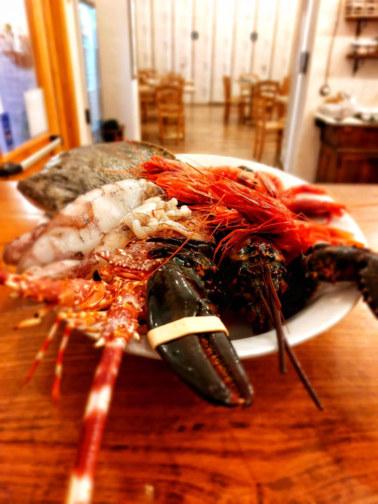
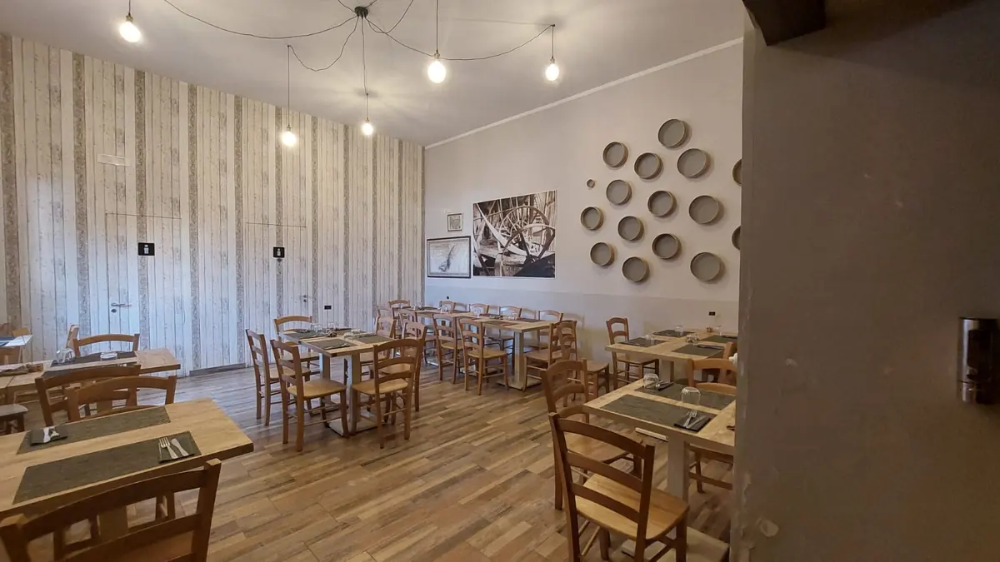

Astice, gamberi rossi e scampi.

Ristorante e pizzeria · Croce di Casale
IMulinari
Ristorante e pizzeria a Croce di Casale, in SS7.
4,6173 recensioni GoogleSS7, 81030 Croce di Casale, CE

La sala con i tavoli in legno.
SS7, Croce di Casale. 4,6 su 5 su Google, 173 recensioni.
Recensioni
Cosa dicono i clienti
4,6 su 5 · 173 recensioni su Google. Qui sotto alcune, riportate senza modifiche (i nomi sono abbreviati).
★★★★★
Un'esperienza impeccabile tra gusto autentico e straordinaria ospitalità
Voto: 5/5 ⭐⭐⭐⭐⭐
Se siete alla ricerca di una pizza straordinaria e, soprattutto, di un ambiente dove sentirvi davvero a casa, la Pizzeria I Mulinari è una tappa assolutamente obbligatoria.
Fin dal momento in cui si varca la soglia, si percepisce un'atmosfera accogliente e genuina, ma il vero valore aggiunto di questo locale — oltre all'eccellente proposta gastronomica — è lo straordinario fattore umano. I proprietari e tutto il personale sono di una simpatia travolgente e di una gentilezza d'altri tempi. Siamo stati accolti con un calore e una cordialità rarissimi da trovare: un'attenzione al cliente sincera, mai forzata, che trasforma una semplice cena fuori in un'esperienza memorabile. Lo staff è veloce, estremamente premuroso e sempre pronto a regalare un sorriso o una battuta con una solarità che contagia la sala.
Passando alla pizza, il livello è altissimo. Gli ingredienti sono visibilmente selezionati, freschi e di prima qualità, abbinati su un impasto leggero, digeribile e steso a regola d'arte. La cottura è impeccabile, capace di esaltare ogni singolo sapore. Il menu offre un perfetto equilibrio tra tradizione e sfiziose innovazioni, accontentando anche i palati più esigenti.
In sintesi: I Mulinari non è solo una pizzeria dove si mangia divinamente, ma è un luogo speciale guidato da persone splendide che amano profondamente il proprio lavoro e sanno come coccolare i propri ospiti. Un mix perfetto di professionalità, massima cordialità e grande cucina.
Ci ritornerò sicuramente e la consiglio vivamente a tutti! Complimenti davvero a tutto lo staff!
★★★★★
Ti senti a casa!
La pizza è impareggiabile e la cucina straordinaria, grazie anche all’uso di prodotti locali (come il maialino nero casertano), prodotti sempre freschi e la continua ricerca nei piatti.
Consigliatissimo!
★★★★★
Location piccola ma tranquilla, pulita, molto carina e curata. Non ci sono barriere architettoniche. I due gestori gentilissimi e preparatissimi, sia sui piatti proposti, sia sui vini. Cibo buono sia per qualità che per preparazione, molta attenzione ai dettagli ed alle intolleranze.
In 3 abbiamo preso 3 antipasti molto abbondanti, ossia 3 taglieri di salumi caldi e freddi e 1 tagliere di formaggi molto particolari, 3 primi, una Fiorentina da 700/800 gr. con contorno di patate, zucca arrostita ed insalata, 2 bottiglie di acqua ed un calice di vino.Due liquori e tre caffè (questi ultimi offerti) per un totale di circa 125 euro. Molto soddisfatti... torneremo a provare anche la pizza!
★★★★★
Locale da poco aperto, arredato in modo semplice, ma molto carino. Situato sull’Appia, si riesce a parcheggiare tranquillamente in un piazzale adiacente. L’accoglienza la fa da padrona, tanto da sentirti subito a tuo agio. Menù abbastanza variegato, dal baccalà alle carni. Buona anche la pizza. Precisi ed onesti ad averci applicato il 20% di sconto per aver prenotato tramite TheFork.
★★★★★
una sera a caso, andiamo a mangiare qualcosa? ci ritroviamo io e un amico di sempre in questo bel locale ben ubicato lungo la Regina Viarum, l'Appia andando verso Sessa Aurunca. subito l'accoglienza è delle migliori e ti senti subito a casa. a fare seguito subito arriva un tagliere di salumi a metro 0, ma quelli veri, genuini e autentici. con la pizza scegliamo un vino audace, un Librandi 2019 da 15%, un gaglioppo di alto livello, inaspettato. il connubio con il vino arriva con le pizze, straordinariamente relaizzate con prodotti di qualità superiore, degni di nota. conto in linea.
superconsigliato!
Orari e dove siamo
Vieni a trovarci
| Lunedì | Chiuso |
|---|---|
| Martedì | 19:30–24:00 |
| Mercoledì | 19:30–24:00 |
| Giovedì | 19:30–24:00 |
| Venerdì | 19:30–23:30 |
| Sabato | 19:30–24:00 |
| Domenica | 12:00–15:00 · 19:00–24:00 |
I Mulinari
SS7, 81030 Croce di Casale, CE
327 465 2465
Orari della scheda Google: nei festivi possono cambiare, chiamateci per conferma.
SS7, 81030 Croce di Casale, CE
Contatti
Scrivici
Un messaggio su WhatsApp, o una telefonata: vi risponde I Mulinari.